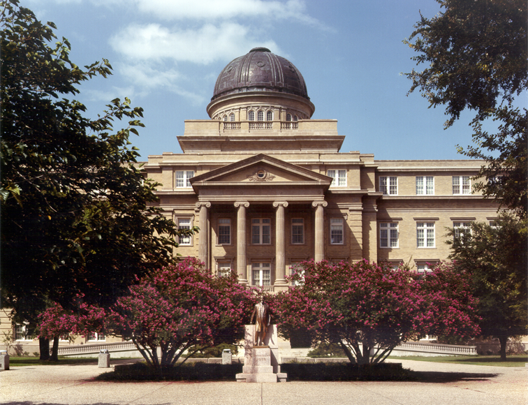
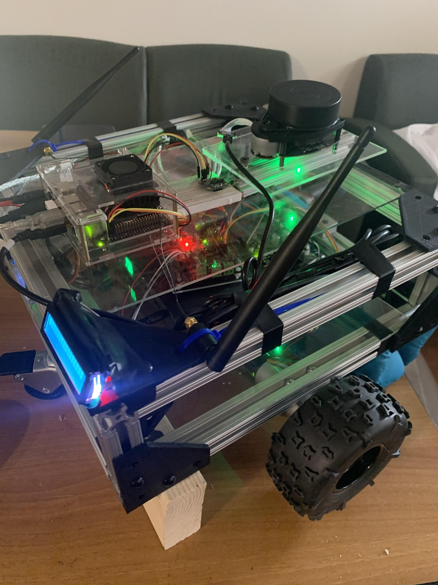

Donovan Palmer
Seeking Engineering Employment
I am a recent graduate from Trinity College in Hartford CT, with a dual degree in Physics and Mechanical Engineering. I am looking to explore my passions for engineering in a full time role at a company that believes in striving for technological advancement in whatever form that may take on.
Altogether, I am a quick learner with grit and intentionality. For a more detailed look about me, check out my LinkedIn profile.
Featured Projects
View selected projects below. A more detailed look at each project can be found at donovan-palmer.
Undergraduate Engineering Research, Texas A&M University (Summer 2018)
Worked in a graduate and post-doctorate Turbomachinery laboratory to investigate the combustion kinetics of Sarin simulants through shock tube experimentation. Awarded 1st place at the summer symposium for best research poster and presentation.
View research experienceUndergraduate Engineering Research, Trinity College (Summer 2017 - Spring 2019)

Modeled the combustion of Sarin simulants using chemical kinetics software (i.e. Cantera / CHEMKIN) to validate reaction mechanisms in literature
View research experienceRobotics
The original aim of this project was to design and build a robot capable of autonomous payload retrieval and delivery within a hallway. Although it was stopped short due to COVID-19 ending my senior year, this project had many successes such as creating a Robot Operating System (ROS) compatible electro-mechanical design capable of teleoperation, preliminary environment mapping, PID motor control, fusion of inertial measurement unit data, and even encoder odometry.
View projectWork Experience
Optional paragraph for work experience summary. Not a part of the job details. Delete if not being used.
Job title
Company Name
Date at job
Job summary goes here. Add as many paragraphs as you need.
Optional list:
- Delete this list if you don't need it.
- Created...
- Lead...
- Responsible for...
Education
School name - City
Designation received or program name, year attended
Summary or accomplishments.